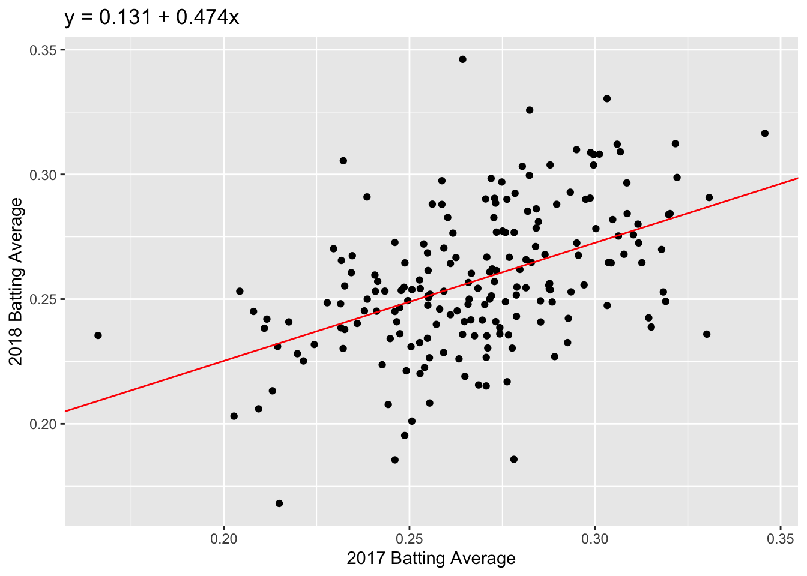

Lecture 5: Correlation, Linear Regression and Prediction
MLB Batting Statistics
Let’s first load the Lahman library used in Lecture 4.
In the code below we’ll create a dataset to use that has player batting averages from the 2017 and 2018 seasons. Can you describe what this code is doing?
batting_2017_2018 <- batting %>%
filter(yearID %in% c(2017, 2018)) %>%
group_by(playerID, yearID) %>%
summarize(H = sum(H), AB = sum(AB)) %>%
filter(AB >= 300) %>%
mutate(BA = H / AB) %>%
ungroup() %>%
filter(!is.na(BA)) %>%
group_by(playerID) %>%
filter(n() == 2) %>%
select(playerID, yearID, BA) %>%
arrange(playerID)In order to study the relationship between a player’s 2017 batting average and his 2018 batting average, it will be more convenient to store the data as below.
## # A tibble: 196 × 3
## # Groups: playerID [196]
## playerID `2017` `2018`
## <chr> <dbl> <dbl>
## 1 abreujo02 0.304 0.265
## 2 adamsma01 0.274 0.239
## 3 alonsyo01 0.266 0.25
## 4 altuvjo01 0.346 0.316
## 5 anderti01 0.257 0.240
## 6 andruel01 0.297 0.256
## 7 arciaor01 0.277 0.236
## 8 arenano01 0.309 0.297
## 9 baezja01 0.273 0.290
## 10 barnhtu01 0.270 0.248
## # … with 186 more rowsIn this format, we have a row for each player and two columns for his batting averages, one for 2017 and one for 2018. In order to convert our data into this format, we use spreading.
When we print out batting_2017_2018 now, we notice that
it is a grouped dataset. Before proceeding we will need to remove this
grouping.
Notice that the column names of the tbl are now “2017” and “2018”.
This can get annoying as we will have to place tick marks around these
names (e.g. `2017`) whenever referencing the variables since they begin
with a number rather than a letter. To avoid having to do this, we will
rename these column names with the rename
function:
Predicting Batting Averages
ba_plot <- batting_2017_2018 %>%
ggplot(aes(x = BA_2017, y = BA_2018)) +
geom_point() +
labs(x = "2017 Batting Average", y = "2018 Batting Average")
ba_plot
Correlation
We can see a positive trend between the 2017 and 2018 batting averages. How can we quantify the relationship between the 2017 and 2018 data?
The correlation coefficient, r, is one way to summarize the dependence between two seasons with one number. r is a standardized measure of the linear dependence between two variables (usually called \(x\) and \(y\)) and can take values between -1 and +1. If \(r = 1\), then the points all lie on a line with positive slope. If \(r = -1\), the points all lie on a line with negative slope.
Loosely speaking, we can think of correlation as a measure of how well a line fits our data. Let’s get some practice!
We can calculate the correlation between two variables in
R using the function cor(). The correlation
between the 2017 and 2018 batting averages is:
## [1] 0.4795003We have a moderate amount of correlation between 2017 and 2018 batting averages, but there is still a lot of noise.
It is important to remember that correlation is only a measure of linear dependence between two variables. The below example shows data where \(y = x^2\) exactly.

Even though \(x\) and \(y\) are dependent, \(r = -0.1\), indicating a weak linear dependence. If we were to draw a line to fit this data, it would be quite flat!

Now let’s go back to the 2017 and 2018 batting data. To visualize our correlation, we draw the line of best fit through our data. In this example, the line of best fit has \(y\)-intercept = 0.131 and slope = 0.474 (we’ll talk about how we find this values later).
ba_plot <- ba_plot +
geom_abline(intercept = a_best, slope = b_best, color = "red") +
labs(title = "y = 0.131 + 0.474x")
ba_plot
Question: Which feature of the best fit line, \(a\) or \(b\), quantifies the linear dependence between 2017 and 2018 FG%?
How does correlation relate to our line of best fit? This brings us to the regression method.
The Regression Method
If we standardize both datasets, \(x\) and \(y\), the correlation is the slope of the line of best fit:
\[\frac{y - \bar{y}}{sd(y)} = r \times \frac{x - \bar{x}}{sd(x)}\]
We can unpack this equation to get the formula for our unstandardized line of best fit:
\[y = a + bx\] where \(a = \bar{y} - b\bar{x}\) and \(b = r \times sd(y)/sd(x)\).
Now that we have our regression line, we can predict a future \(y\) value given we know \(x\). For example, if we know that a player’s 2017 batting average was 0.31, we predict that their 2018 batting average will be: \[\widehat{y} = 0.131 + 0.474 \times 0.31 = 0.278.\] Note that we use \(\widehat{y}\) for a predicted value of \(y\); we can think of this as \(\widehat{y} = E[Y|x]\).
Fitting linear models
To find the regression coefficients, \(a\) and \(b\), we use the function lm().
The usage of lm() is as follows:
The first argument in the lm() call is called a
formula. This takes input y ~ x, where
y is our response and x is our predictor or
covariate. In the lm() call above, the column
BA_2018 is our response and BA_2017 is our
predictor.
The second argument in lm() is where we specifiy our
data: batting_2017_2018. R then looks for the
columns BA_2017 and BA_2018 in the given
dataset to calculate the regression coefficients.
Our new object, fit, contains a lot of information about
our regression line. At the moment, we just want the coefficients. We
can access the coefficients as follows:
## (Intercept) BA_2017
## 0.1305237 0.4735976The modelr package
modelr is another package that is part of the
tidyverse. It has a number of useful functions for linear
regression models.
We can use the function rsquare to get the square of the
correlation, \(r^2\). The quantity
\(r^2\) is the proportion of
variance explained by the linear model. The first argument of the
rsquare function is the output fit from our
linear model function lm. The second argument is our
original dataset, batting_2017_2018:
## [1] 0.2299205Adding Predictions and Residuals
We can also use modelr to add predictions and residuals
to our original dataset:
batting_2017_2018 <- batting_2017_2018 %>%
add_predictions(model = fit, type = "response", var = "pred") %>%
add_residuals(model = fit, var = "resid")
batting_2017_2018## # A tibble: 196 × 5
## playerID BA_2017 BA_2018 pred resid
## <chr> <dbl> <dbl> <dbl> <dbl>
## 1 abreujo02 0.304 0.265 0.275 -0.0101
## 2 adamsma01 0.274 0.239 0.260 -0.0219
## 3 alonsyo01 0.266 0.25 0.257 -0.00654
## 4 altuvjo01 0.346 0.316 0.294 0.0222
## 5 anderti01 0.257 0.240 0.252 -0.0125
## 6 andruel01 0.297 0.256 0.271 -0.0155
## 7 arciaor01 0.277 0.236 0.262 -0.0259
## 8 arenano01 0.309 0.297 0.277 0.0199
## 9 baezja01 0.273 0.290 0.260 0.0307
## 10 barnhtu01 0.270 0.248 0.259 -0.0107
## # … with 186 more rowsIn add_predictions, we have to specify three arguments:
(i) the model, which is just the output of lm(), (ii) the
type, which will always be “response” for this course, and (iii) the
name of the column we want our predictions to be stored in. We similarly
have to specify a model and var argument in
add_residual.
Using these new columns, we can create the original plot and add the residual lengths:
batting_2017_2018 %>%
ggplot() +
geom_segment(aes(x = BA_2017, xend = BA_2017, y = BA_2018, yend = pred), color = "dodgerblue") +
geom_point(aes(x = BA_2017, y = BA_2018)) +
geom_abline(intercept = 0.1305237, slope = 0.4735976, color = "red")
Predict
So far we have looked at the predicted values from our
training data; that is, the data we used to fit our linear
model. Suppose we have more players’ batting averages from 2017 but we
do not have their batting averages from 2018. We can use our linear
model to predict these players’ 2018 batting average using the function
predict.
In the below code, we enter the players’ 2017 batting averages as the
tibble new_data. We then use the function
predict. The first argument of predict is the
fitted model, fit. The second argument is
new_data.
## 1 2 3
## 0.2446607 0.2773390 0.2560271We can also add these predictions to new_data using
add_predictions:
## # A tibble: 3 × 2
## BA_2017 pred
## <dbl> <dbl>
## 1 0.241 0.245
## 2 0.31 0.277
## 3 0.265 0.256We add these predictions to our plot:
ggplot() +
geom_point(data = batting_2017_2018, aes(x = BA_2017, y = BA_2018)) +
geom_abline(intercept = 0.1305237, slope = 0.4735976, color = "red") +
geom_point(data = new_data, mapping = aes(x = BA_2017, y = pred), color = "dodgerblue")